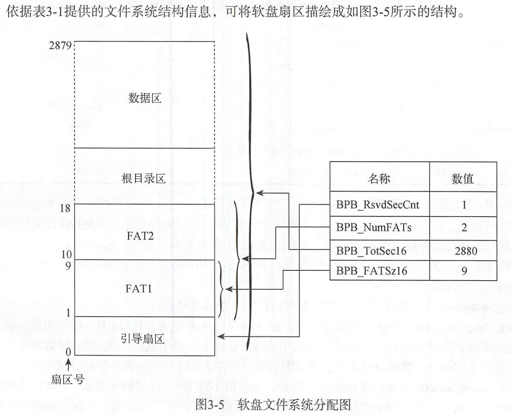

参考链接: https://academy.cba.mit.edu/classes/networking_communications/SD/FAT.pdf https://zhuanlan.zhihu.com/p/121807427
专门为1.44MB的软盘设计的，不区分大小写
文件结构分配图
扇区单扇区大小：512BFAT12系统总扇区数：2880个=1.44MB / 512B单扇区目录数:512B/32B=16d=10h个目录
单扇区大小：512B
FAT12系统总扇区数：2880个=1.44MB / 512B
单扇区目录数:512B/32B=16d=10h个目录
簇说明：FAT12文件系统以簇为单位来分配数据区的存储空间(扇区)，簇将2的整数次方个扇区作为一个“原子”数据存储单元。定义：簇是FAT类文件系统的最小数据存储单位。每12个字节为一个簇（因此是FAT12名称的来源）长度：BPB_BytesPreSec(每扇区字节数) * BPB_SecPerClus(每簇扇区数) 个字节内容：12个二进制数字表示这个簇指向的下一个簇，这就形成了一个链表，链表的空指针NULL（结尾标志），使用0xFFF表示。
作用：每个簇映射到一个扇区上。注意：即使文件的长度只有一个字节，FAT12文件系统也会为它分配一个簇的磁盘存储空间。
说明：FAT12文件系统以簇为单位来分配数据区的存储空间(扇区)，簇将2的整数次方个扇区作为一个“原子”数据存储单元。
定义：簇是FAT类文件系统的最小数据存储单位。每12个字节为一个簇（因此是FAT12名称的来源）
长度：BPB_BytesPreSec(每扇区字节数) * BPB_SecPerClus(每簇扇区数) 个字节
内容：12个二进制数字表示这个簇指向的下一个簇，这就形成了一个链表，链表的空指针NULL（结尾标志），使用0xFFF表示。
作用：每个簇映射到一个扇区上。
注意：即使文件的长度只有一个字节，FAT12文件系统也会为它分配一个簇的磁盘存储空间。
引导扇区包含
引导程序、文件系统的组成结构信息（对磁盘扇区的管理情况）表格
名称 偏移 长度(字节) 内容 数据 备注 BS_jmpBoot 0 3 跳转指令 jump short Label_Start nop
BS_OEMName 3 8 生产厂商名 'MINEboot' 自行为文件系统命名 BPB_BytesPreSec 11 2 每扇区字节数 512
BPB_SecPerClus 13 1 每簇扇区数 1 由于每个扇区的容量只有512B，过小的扇区容量可能会导致软盘读写次数过于频繁，从而引入簇(Cluster)这个概念。簇将2的整数次方个扇区作为一个“原子”数据存储单元，也就是说簇是FAT类文件系统的最小数据存储单位。 BPB_RsvdSeCnt 14 2 保留扇区数 1 此域值不能为0。保留扇区起始于FAT12文件系统的第一个扇区，对于FAT12而言此位必须为1，也就意味着引导扇区包含在保留扇区内，所以FAT表从软盘的第二个扇区开始 BPB_NumFats 16 1 FAT表的份数 2 指定FAT12文件系统中FAT表的份数，任何FAT类文件系统都建议此域设置为2。设置为2主要是为了给FAT表准备一个备份表，因此FAT表1与FAT表2内的数据是一样的，FAT表2是FAT表1的数据备份表。 BPB_RootEntCnt 17 2 根目录可容纳的目录项数 224 指定根目录可容纳的目录项数。对于FAT12文件系统而言，这个数值乘以32必须是BPB_BytesPerSec的偶数倍。224*32=512*14 BPB_TotSec16 19 2 总扇区数 2880 这里的总扇区数包括保留扇区(内含引导扇区)、FAT表、根目录区以及数据区占用的全部扇区数，如果此域值为0，那么BPB_TotSec32字段必须是非0值。 BPB_Media 21 1 介质描述符 0xF0 对于不可移动的存储介质而言，标准值是0xF8。对于可移动的存储介质，常用值为0xF0，此域的合法值是0x8、0xF9、0xF0、0xFA、0xFB、0xFC、0xFD、0xFE、0xFF。另外提醒一点，无论该字段写入了什么数值，同时也必须向FAT[0]的低字节写入相同值。 BPB_FATSz16 22 2 每FAT扇区数 9 FAT表1和FAT表2拥有相同的容量，它们的容量均由此值记录。 BPB_SecPerTrk 24 2 每磁道扇区数 18
BPB_NumHeads 26 2 磁头数 2
BPB_HiddSec 28 4 隐藏扇区数 0
BPB_TotSec32 32 4 如果BPB_TotSec16=0,则由这个值记录扇区数 0
BS_DrvNum 36 1 int 13h的驱动器号 0
BS_Reserved1 37 1 未使用 0
BS_BootSig 38 1 扩展引导标记（29h） 0x29
BS_VolID 39 4 卷序列号 0
BS_VolLab 43 11 卷标 'boot loader' 它就是Windows或Linux系统中显示的磁盘名。 BS_FileSysType 54 8 文件系统类型 'FAT12' 这个类型值只是一个字符串而己，操作系统并不使用该字段来鉴别FAT类文件系统的类型。 引导代码 62 448 引导代码、即其他数据
结束标志 510 2 结束标志 0xAA55
包含
引导程序、文件系统的组成结构信息（对磁盘扇区的管理情况）
表格
| 名称 | 偏移 | 长度(字节) | 内容 | 数据 | 备注 |
| BS_jmpBoot | 0 | 3 | 跳转指令 | jump short Label_Start nop | |
| BS_OEMName | 3 | 8 | 生产厂商名 | 'MINEboot' | 自行为文件系统命名 |
| BPB_BytesPreSec | 11 | 2 | 每扇区字节数 | 512 | |
| BPB_SecPerClus | 13 | 1 | 每簇扇区数 | 1 | 由于每个扇区的容量只有512B，过小的扇区容量可能会导致软盘读写次数过于频繁，从而引入簇(Cluster)这个概念。簇将2的整数次方个扇区作为一个“原子”数据存储单元，也就是说簇是FAT类文件系统的最小数据存储单位。 |
| BPB_RsvdSeCnt | 14 | 2 | 保留扇区数 | 1 | 此域值不能为0。保留扇区起始于FAT12文件系统的第一个扇区，对于FAT12而言此位必须为1，也就意味着引导扇区包含在保留扇区内，所以FAT表从软盘的第二个扇区开始 |
| BPB_NumFats | 16 | 1 | FAT表的份数 | 2 | 指定FAT12文件系统中FAT表的份数，任何FAT类文件系统都建议此域设置为2。设置为2主要是为了给FAT表准备一个备份表，因此FAT表1与FAT表2内的数据是一样的，FAT表2是FAT表1的数据备份表。 |
| BPB_RootEntCnt | 17 | 2 | 根目录可容纳的目录项数 | 224 | 指定根目录可容纳的目录项数。对于FAT12文件系统而言，这个数值乘以32必须是BPB_BytesPerSec的偶数倍。224*32=512*14 |
| BPB_TotSec16 | 19 | 2 | 总扇区数 | 2880 | 这里的总扇区数包括保留扇区(内含引导扇区)、FAT表、根目录区以及数据区占用的全部扇区数，如果此域值为0，那么BPB_TotSec32字段必须是非0值。 |
| BPB_Media | 21 | 1 | 介质描述符 | 0xF0 | 对于不可移动的存储介质而言，标准值是0xF8。对于可移动的存储介质，常用值为0xF0，此域的合法值是0x8、0xF9、0xF0、0xFA、0xFB、0xFC、0xFD、0xFE、0xFF。另外提醒一点，无论该字段写入了什么数值，同时也必须向FAT[0]的低字节写入相同值。 |
| BPB_FATSz16 | 22 | 2 | 每FAT扇区数 | 9 | FAT表1和FAT表2拥有相同的容量，它们的容量均由此值记录。 |
| BPB_SecPerTrk | 24 | 2 | 每磁道扇区数 | 18 | |
| BPB_NumHeads | 26 | 2 | 磁头数 | 2 | |
| BPB_HiddSec | 28 | 4 | 隐藏扇区数 | 0 | |
| BPB_TotSec32 | 32 | 4 | 如果BPB_TotSec16=0,则由这个值记录扇区数 | 0 | |
| BS_DrvNum | 36 | 1 | int 13h的驱动器号 | 0 | |
| BS_Reserved1 | 37 | 1 | 未使用 | 0 | |
| BS_BootSig | 38 | 1 | 扩展引导标记（29h） | 0x29 | |
| BS_VolID | 39 | 4 | 卷序列号 | 0 | |
| BS_VolLab | 43 | 11 | 卷标 | 'boot loader' | 它就是Windows或Linux系统中显示的磁盘名。 |
| BS_FileSysType | 54 | 8 | 文件系统类型 | 'FAT12' | 这个类型值只是一个字符串而己，操作系统并不使用该字段来鉴别FAT类文件系统的类型。 |
| 引导代码 | 62 | 448 | 引导代码、即其他数据 | ||
| 结束标志 | 510 | 2 | 结束标志 | 0xAA55 |
FAT表位宽：12bit扇区数：9个单表扇区总大小：9个 * 512B= 4.5KB单表总簇数：9个 * 512 B / 12bit = 3072个FAT表2的作用：作为FAT1的备份表表现值
FAT项 实例值 描述 0 FF0h 磁盘标志字，低字节与BPB_Media保持一致，其他位设置为0 1 FFFh 第一个簇已经被占用 2 003h 000h：可用簇 3 004h 002h至FEFh：已用簇，标志下一个簇的簇号 ... ... FF0至FF6h：保留簇 N FFFh FF7：坏簇 N+1 000h FF8h至FFFh：文件的最后一个簇
位宽：12bit
扇区数：9个
单表扇区总大小：9个 * 512B= 4.5KB
单表总簇数：9个 * 512 B / 12bit = 3072个
FAT表2的作用：作为FAT1的备份表
表现值
| FAT项 | 实例值 | 描述 |
| 0 | FF0h | 磁盘标志字，低字节与BPB_Media保持一致，其他位设置为0 |
| 1 | FFFh | 第一个簇已经被占用 |
| 2 | 003h | 000h：可用簇 |
| 3 | 004h | 002h至FEFh：已用簇，标志下一个簇的簇号 |
| ... | ... | FF0至FF6h：保留簇 |
| N | FFFh | FF7：坏簇 |
| N+1 | 000h | FF8h至FFFh：文件的最后一个簇 |
根目录区保存目录项信息大小：32B可容纳的目录项数：224起始扇区号：1(引导扇区)+9( FAT表的扇区数)* 2(FAT表的份数)=19总扇区数：14个=224(根目录可容纳的目录项数) * 32B(大小) / 512(每个扇区大小) -1
保存目录项信息
大小：32B
可容纳的目录项数：224
起始扇区号：1(引导扇区)+9( FAT表的扇区数)* 2(FAT表的份数)=19
总扇区数：14个=224(根目录可容纳的目录项数) * 32B(大小) / 512(每个扇区大小) -1
数据区保存目录项信息系和保存文件内的数据大小：32B总扇区数：2847个=2880(总扇区数)-1(引导扇区)-9(FAT表1)-9(FAT表2)-14(根目录区)目录项结构
名称 偏移 长度 描述 DIR_Name 0x00 11 文件名8B，扩展名3CB DIR_Attr 0x0B 1 文件属性：0x27隐藏文件，目录0x10，普通文件0x20 保留 0x0C 110 保留 DIR_WrtTime 0X16 2 最后一次写入时间 DIR_WrtDate 0X18 2 最后一次写入日期 DIR_FstClus 0X1A 2 起始簇号，FAT[0]和FAT[1]是保留项，有效起始簇号是2 DIR_FileSize 0X1C 4 文件大小
文件名存储
用户确定的文件名/目录名 DIR_Name字段存储内容 "foo.bar" "FOO BAR" "FOO.BAR" "FOO BAR" "Foo.Bar" "FOO BAR" "foo" "FOO " "foo." "FOO " "PICKLE.A" "PICKLE A " "prettybg.big" "PRETTYBGBIG" ".big" " BIG"
保存目录项信息系和保存文件内的数据
大小：32B
总扇区数：2847个=2880(总扇区数)-1(引导扇区)-9(FAT表1)-9(FAT表2)-14(根目录区)
目录项结构
| 名称 | 偏移 | 长度 | 描述 |
| DIR_Name | 0x00 | 11 | 文件名8B，扩展名3CB |
| DIR_Attr | 0x0B | 1 | 文件属性：0x27隐藏文件，目录0x10，普通文件0x20 |
| 保留 | 0x0C | 110 | 保留 |
| DIR_WrtTime | 0X16 | 2 | 最后一次写入时间 |
| DIR_WrtDate | 0X18 | 2 | 最后一次写入日期 |
| DIR_FstClus | 0X1A | 2 | 起始簇号，FAT[0]和FAT[1]是保留项，有效起始簇号是2 |
| DIR_FileSize | 0X1C | 4 | 文件大小 |
文件名存储
| 用户确定的文件名/目录名 | DIR_Name字段存储内容 |
| "foo.bar" | "FOO BAR" |
| "FOO.BAR" | "FOO BAR" |
| "Foo.Bar" | "FOO BAR" |
| "foo" | "FOO " |
| "foo." | "FOO " |
| "PICKLE.A" | "PICKLE A " |
| "prettybg.big" | "PRETTYBGBIG" |
| ".big" | " BIG" |